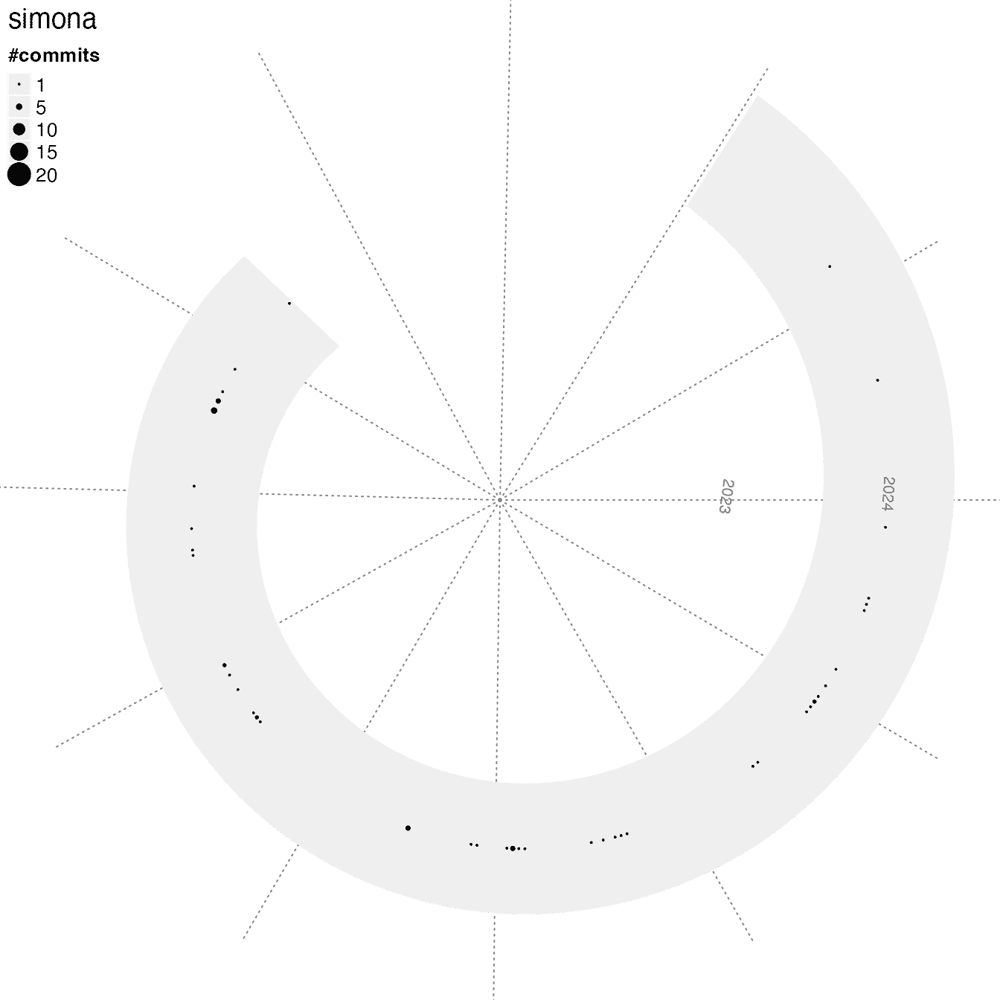
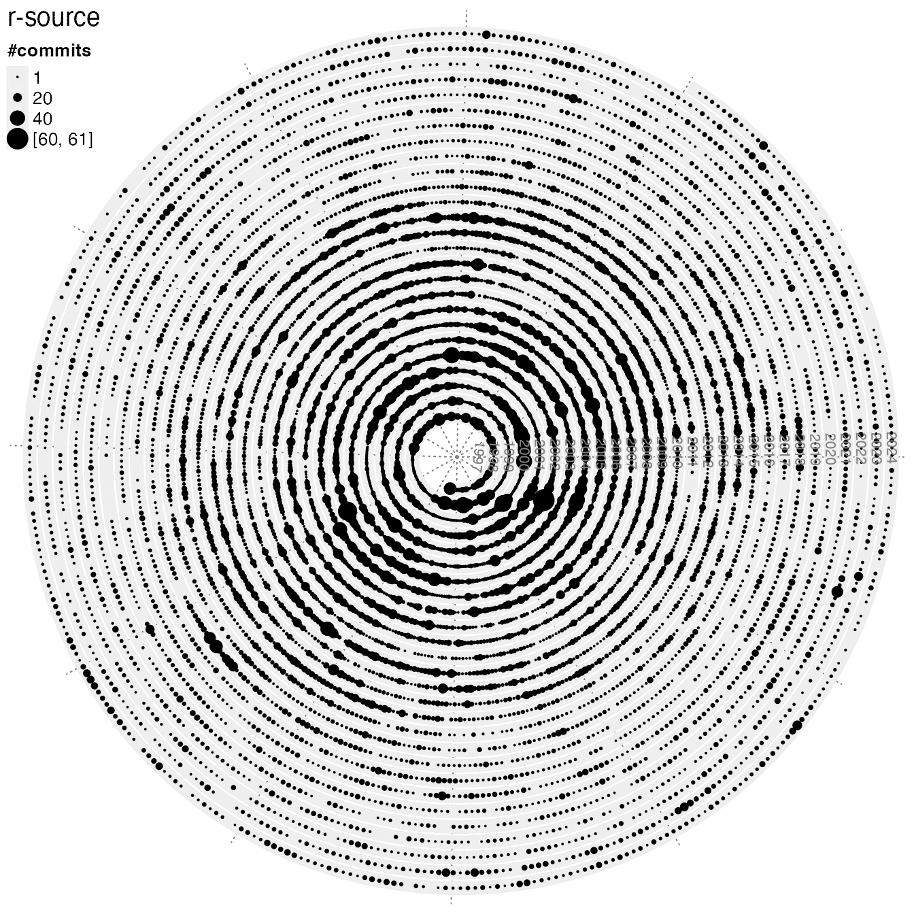
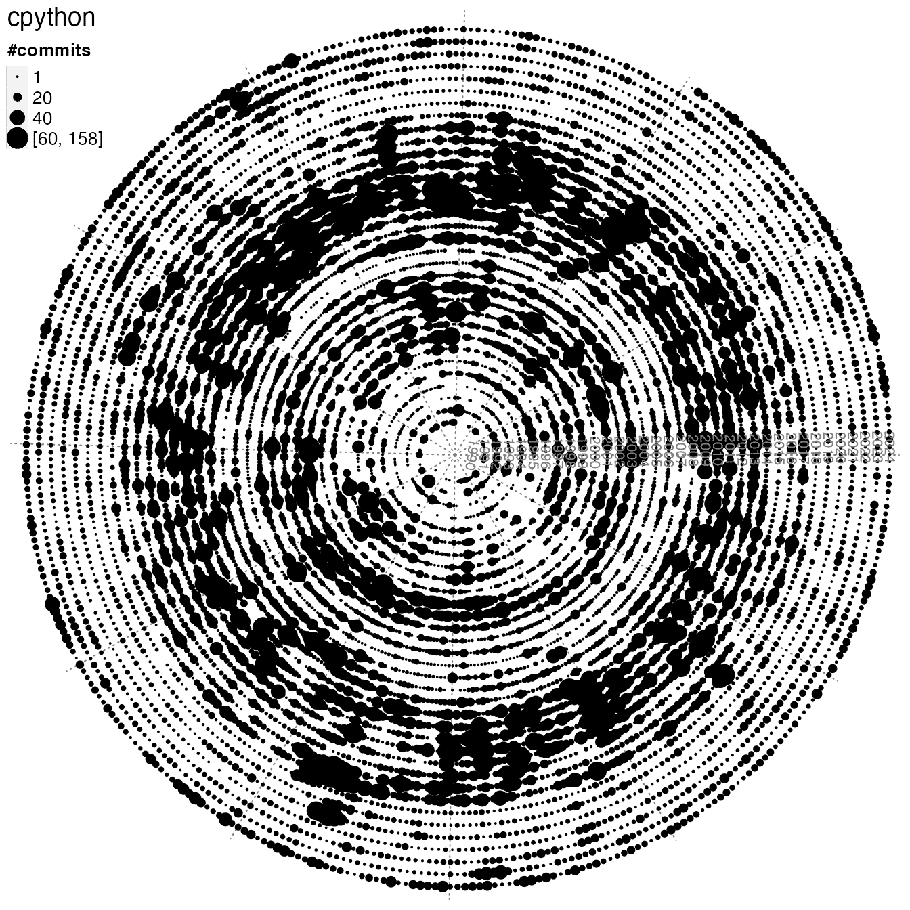
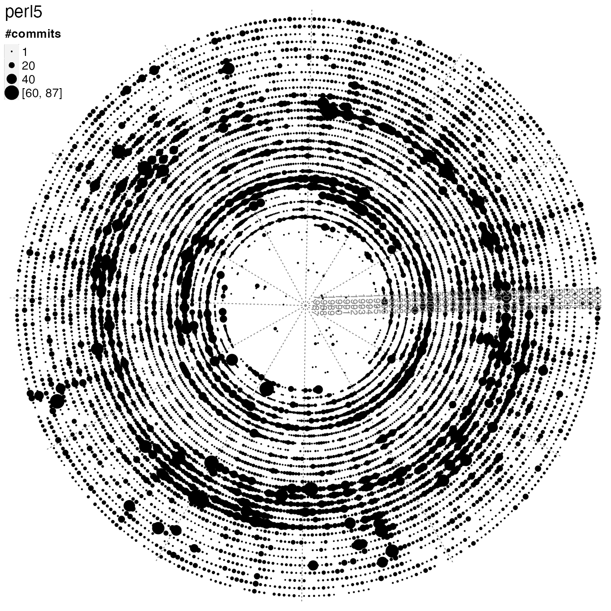
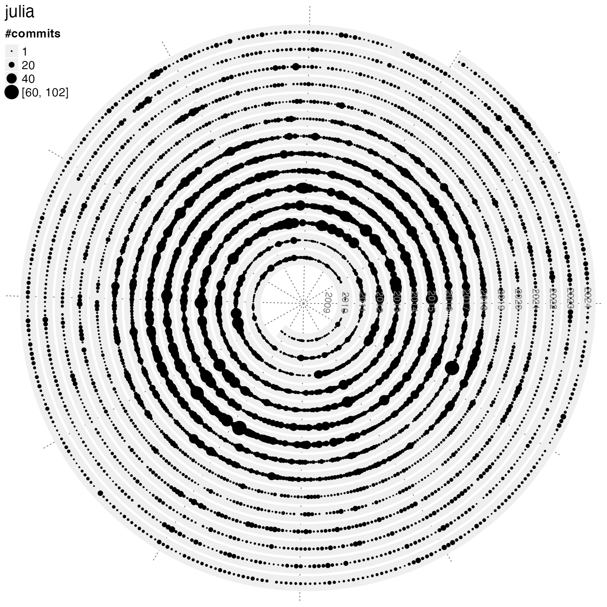

vignettes/spiralize_git_commit.Rmd
spiralize_git_commit.Rmdspiral_git_commits() visualizes numbers of daily git commits in a spiral. The first argument should be the path of a local git repository. The following shows commit histories of some of my R packages.
spiral_git_commits("~/project/development/ComplexHeatmap")
spiral_git_commits("~/project/development/circlize")
spiral_git_commits("~/project/development/rGREAT")
spiral_git_commits("~/project/development/simona")
spiral_git_commits("~/project/development/spiralize")
Let’s check the development activity of several programming languages:
spiral_git_commits("~/test/r-source", commits_range = c(1, 60))
spiral_git_commits("~/test/cpython", commits_range = c(1, 60))
spiral_git_commits("~/test/perl5", commits_range = c(1, 60))
spiral_git_commits("~/test/julia", commits_range = c(1, 60))